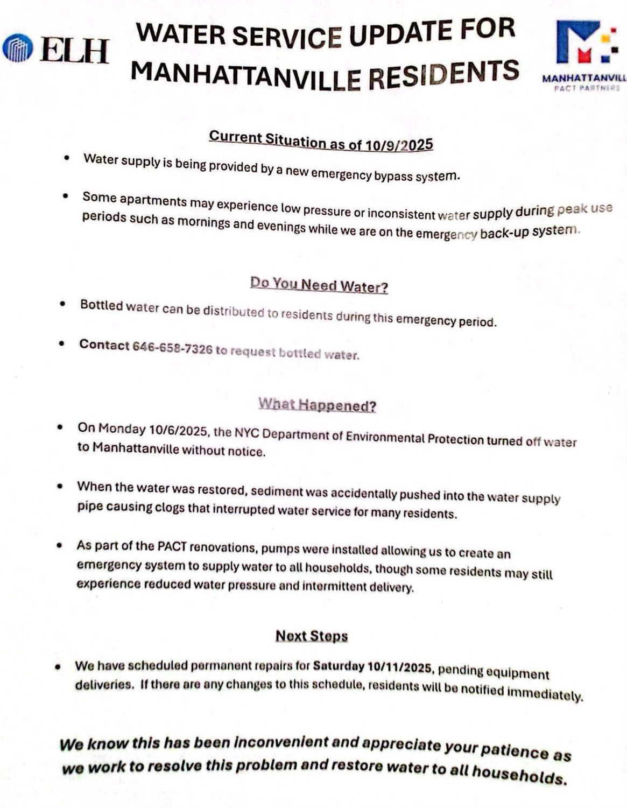
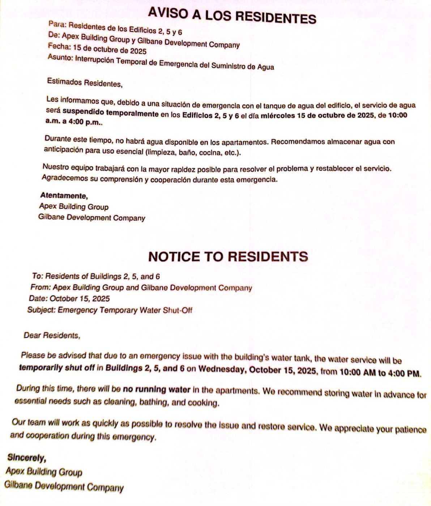
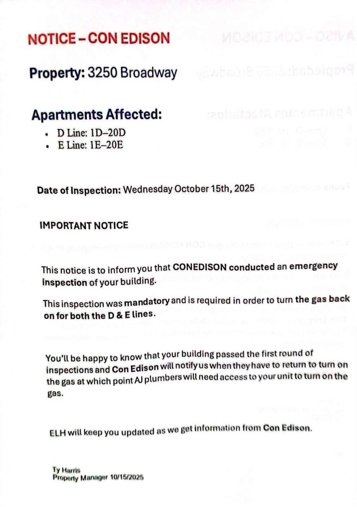

Oct. 6: A letter from Harris to Manhattanville tenants informed residents about a water outage affecting the development. Harris wrote that management had already contacted the New York City Department of Environmental Protection to investigate the matter.
Oct. 9: ELH Management and Manhattanville PACT partners informed residents that an emergency bypass system was put in place providing water and that bottled water would be distributed to residents during the emergency period.
Oct. 9: The update informed residents that water was briefly turned off on Oct. 6. After being turned back on, water supply pipes were found to be clogged with sediment.
Oct. 15: Buildings 2, 5, and 6 received notice from APEX Building Group and Gilbane Development Company that their running water would be temporarily shut off.
Residents of 3250 Broadway received notice on Oct. 15 about gas issues in the building.
Oct. 27: A managament update informed residents were informed that water was being provided with a bypass pump system that sometimes shuts off when water pressure changes, requiring staff interference.
Oct. 27: Manhattanville residents received further updates about additional permanent repairs for that day. Residents were informed that they would need to store water in buckets in preparation for the outage.
Oct. 31: ELH Management and Manhattanville PACT completed the water repair. Additional preventive maintenance was also performed at that time, including the repair of several broken pipelines.
Nov. 7: A PACT representative wrote that additional construction would be undertaken to fix ongoing water pressure issues.
Nov. 11: Residents were encouraged to store water in advance of another outage.



